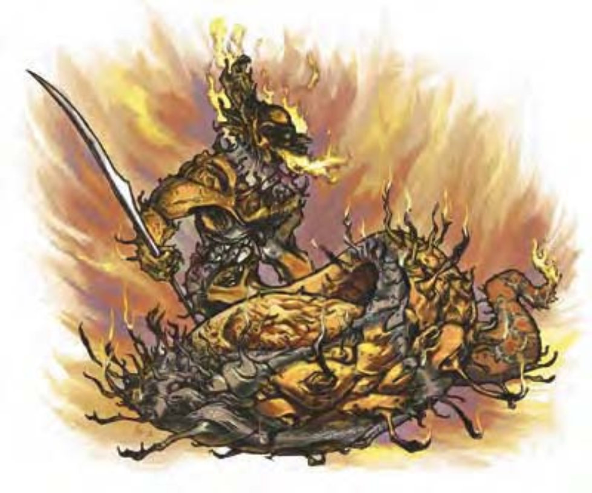

这种生物上半身为肌肉发达的人形，面似鹰、下身似蛇，鳞片呈黑或红色。背脊、手、头上都长有火焰形状的棘刺。
火元素界是许多奇特生物的家乡，包含最可怕的火蜥蜴疆域。这些蛇形生物居住的金属城市无时无刻不在散发出超自然的高热。
火蜥蜴是自私冷酷的生物，喜爱折磨他人。他们的高热金属矛很少离身，但有时也会装备其他武器。
被召唤到物质界时，火蜥蜴通常会协助铸造工匠。可在火中铸造金属的能力使得他们常常成为最优秀且知名的金属铁匠。
火蜥蜴采无性繁殖，每个火蜥蜴每十年就会生出一只幼蜥蜴，在火池中养育到成年。火炎怪与平民火蜥蜴其实是不同种的生物，贵族火蜥蜴则由平民火蜥蜴晋升而成。
火蜥蜴通晓火族语。部分平民火蜥蜴和全体贵族火蜥蜴都通晓通用语。
火蜥蜴用他们炉火般的身体拿着火烫的金属矛攻击。嗜血嗜虐的天性使他们急于开战。他们会先挑看起来最强壮的对手厮杀，留下弱小对手慢慢宰割。
在计算伤害减免时，火蜥蜴的天生武器视为魔法武器。
紧勒 (特异)：一旦通过擒抱检定，火蜥蜴即可自动造成尾巴拍击及火焰伤害。贵族火蜥蜴还同时紧勒多个体型小上2级的敌人。
烧烫 (特异)：火蜥蜴的高热体温在进行接触攻击时可造成额外的火焰伤害。他的金属武器亦同。
精通擒抱 (特异)：如果火蜥蜴利用尾巴拍击击中对手，即可利用即时动作进行擒抱攻击，且不会引发对方借机攻击。如果擒抱成功，则可定住对手进行“紧勒”。
类法术能力 (贵族专属)：每天3次――“燃烧之手” (DC=13)、“火球术” (DC=15)、“炽焰法球” (DC=14)、“火墙术” (DC=16)；每天1次――“解除魔法”、“七级召唤怪物术” (超大型火蜥蜴)。施法者等级15。豁免检定DC的调整值与魅力调整值相同。
技能：火蜥蜴在进行“手艺 (铁匠)”检定时具有+4种族加值。
专长：即使没有三种天生武器，火蜥蜴仍可使用“多重攻击”。
火炎怪，最小的火蜥蜴，会形成野蛮部落。其他火蜥蜴则将文明建于火炎怪社群上。火蜥蜴贵族利用界域旅行学习以增长能力，这些老练生物有时会成为同类中的领导者，建立起强大的王国。
在混居社会中，体型大小与能力决定社会地位。火炎怪是最底层的居民，也是军队中的前锋。平民火蜥蜴是中阶居民，并为主要的战斗兵员，贵族火蜥蜴当然就是指军官。
火蜥蜴国家会尽力反抗界域中的元素王，而且鄙视火矮人、火巨灵及其他居民。他们多半失败，并被强制收编到元素大军中。
火炎怪没有适合职业。他们有时会成为导师或武者。平民火蜥蜴与贵族火蜥蜴则可能是牧师、术士或战士 (适合职业)。
| 资料栏位 | 小蜥蜴火蜥蜴 | 平民火蜥蜴 | 贵族火蜥蜴 |
|---|---|---|---|
| 生命骰 | 4d8+8 (26HP) | 9d8+18 (58HP) | 15d8+45 (112HP) |
| 先攻 | +1 | +1 | +1 |
| 速度 | 20英尺 (4格) | ||
| 防御等级 | 19 (+1体型、+1敏捷、+7天生)、接触12、措手不及18 | 18 (+1敏捷、+7天生)、接触11、措手不及17 | 18 (-1体型、+1敏捷、+8天生)、接触10、措手不及17 |
| 基本攻击/擒抱 | +4 / +1 | +9 / +11 | +15 / +25 |
| 攻击 | 矛+6近战 (1d6+1/x3 附加1d6火焰) | 矛+11近战 (1d8+3/x3 附加1d6火焰) | “+3长矛”+23近战 (1d8+9/x3 附加1d8火焰) |
| 全力攻击 | 矛+6近战 (1d6+1/x3 附加1d6火焰) 及尾巴拍击+4近战 (1d4附加1d6火焰) | 矛+11近战 (1d8+3/x3 附加1d6火焰) 及尾巴拍击+9近战 (2d6附加1d6火焰) | “+3长矛”+23/+18近战 (1d8+9/x3 附加1d8火焰) 及尾巴拍击+18近战 (2d8附加1d8火焰) |
| 特殊攻击 | 紧勒、烧烫、精通擒抱 (贵族额外拥有：类法术能力) | ||
| 特殊能力 | 黑暗视觉60英尺、对火焰免疫、易受寒冷影响 | 伤害减免10 / 魔法、黑暗视觉60英尺、对火焰免疫、易受寒冷影响 | 伤害减免15 / 魔法、黑暗视觉60英尺、对火焰免疫、易受寒冷影响 |
| 豁免 | 强韧+6、反射+5、意志+6 | 强韧+8、反射+7、意志+8 | 强韧+12、反射+10、意志+11 |
| 属性 | 力量12、敏捷13、体质14、智力14、感知15、魅力13 | 力量14、敏捷13、体质14、智力14、感知15、魅力13 | 力量22、敏捷13、体质16、智力16、感知15、魅力15 |
| 专长 | 警觉、多重攻击 | 警觉、多重攻击、猛力攻击 | 警觉、顺势斩、强力顺势斩、多重攻击、猛力攻击、专攻技能 (手艺 : 铁匠) |
| 环境 | 火元素界 | ||
| 组织 | 单独、成双或聚集 (3-5) | 单独、成双或聚集 (3-5) | 单独、成双或贵族聚会 (9-14) |
| 挑战级数 | 3 | 6 | 10 |
| 宝藏 | 标准 (只有不可燃物) | 标准 (只有不可燃物) | 双倍标准 (只有不可燃物) 及 “+3长矛” |
| 阵营 | 通常邪恶 (任何) | ||
| 等级修正值 | +4 | +5 | ― |